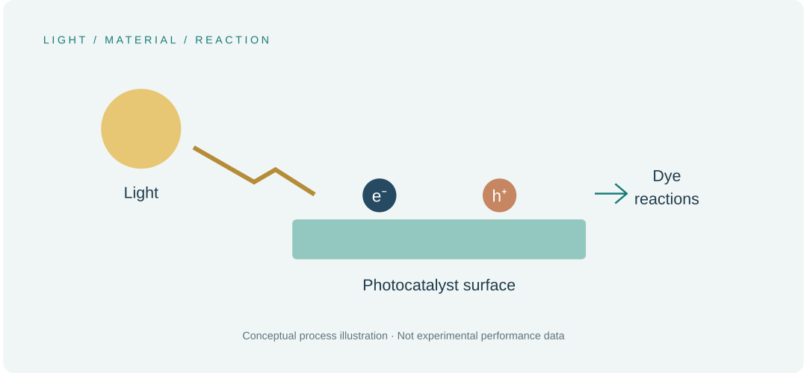

A co-authored analysis of metal oxides and nanocomposites for photocatalytic treatment of organic dyes.
The research question
Which material and operating factors influence photocatalytic dye degradation, and how do different catalyst systems compare?

What the article covers
The article analyzes literature on metal oxides and nanocomposites, examining degradation mechanisms, operating conditions, comparative performance, and economic considerations.
The central perspective
The discussion connects photocatalyst selection with the conditions needed for efficient dye treatment. It compares advantages and limitations across materials and considers the steps involved in photocatalytic degradation.
Why it matters
Reported degradation performance depends on both material choice and experimental conditions. The article provides context for comparing wastewater-treatment approaches and identifying questions for subsequent experimental studies.
My involvement
I am a co-author of this article, part of my broader publication record in materials chemistry.
Photocatalyst performance needs to be understood in the context of material properties and treatment conditions.
Scope of the work
This publication analyzes photocatalytic approaches; it is not presented here as a new treatment device developed in my PhD.
Read the publication
Research summary based on the published article and its documented scope. Original illustrations are provided for explanation.